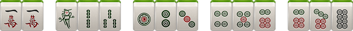
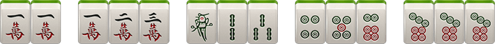
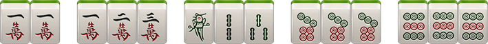
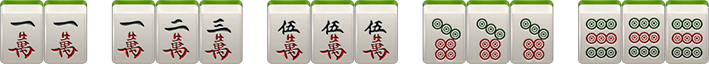
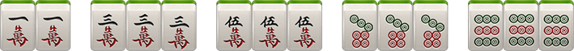
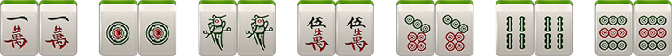

一、红中王
红中王打法简单、节奏快速、极易胡牌
二、牌数
红中王，共108张：筒、索、万、不带东、南、西、北风、中、发、白
三、摸牌
游戏开始，庄家得14张牌，闲家得13张，庄家从牌中选1张丢出。其它3家有权要那张丢出的牌，只能胡、碰、杠，胡比碰杠优先，不能吃
四、胡牌规则
1、

2、

3、

4、

5、

6、

五、关于杠
1、明杠
A、手上有3张相同的牌，其他玩家打了第4张相同的牌即可开杠。举例：手上有3个一万，其他玩家打了个一万，则可开杠，如果没有流局，则放杠者出分。
B、碰牌之后，自己又摸了1张相同的牌即可开杠，举例：碰了一万，自摸个一万，则可开杠
2、暗杠
手上抓了四张相同的牌，就是暗杠
六、庄家分配：庄闲输赢多一分
1、第一局由创建房间者为庄家
12、以后谁胡牌，下局谁做庄
13、如果出现通炮情况，则下轮由放炮玩家当庄家
七、积分规则
1、自摸
每人输2分，胡牌玩家赢6分，如庄家自摸，闲家每人输3分
2、小胡接炮
点炮方输1分，胡牌玩家赢1分，如点炮方为庄家，则庄家多输1分，如接炮方为庄家，点炮的闲家多输1分
3、开杠
A、暗杠相当于自摸，每人出2分
B、碰牌之后，再抓上1个所碰的牌开杠，每人出1分
C、手抓了3个相同的牌，然后有人打了1个相同的牌，开杠的话，放杠者出3分
注：杠牌后如果流局依然算杠分
八、特殊规则
1、通炮：即几个玩家可胡同一张牌，此牌即为通炮
2、漏胡：如果玩家漏掉炮胡，则该玩家摸牌前禁止炮胡，摸牌后正常；只对该玩家漏胡，其他玩家正常
九、红中赖子
红中特殊规则:
1、除了万，条，筒, 多了红中(共计112张牌)
2、红中在手中可以做万能牌使用
3、红中不能碰，不能杠
4、红中不能和其他牌组合碰杠。比如：1万1万红中，别人打1万，是不能杠一万的
5、起手4个红中可以直接胡
十、抓鸟
1、一码全中：即只抓一张牌，根据牌面的数字中几个鸟，如抓到8筒，即中8个鸟，抓到红中则中9个鸟
2、正常抓鸟：在胡牌后进行，由胡牌方进行（一炮多响时由点炮玩家进行），此时从牌堆上取创建房间时选得鸟牌张数，其中包含159（勾选红中赖子玩法时，抓鸟抓出红中算1）牌的个数既为中鸟个数，例如自摸中鸟1个，则最终赢得分数为6+3=9分
十一、可选规则
1、抢杠胡（含明杆，即点杠）
2、可胡七对（含是否加番，即基础分的2倍）
3、无鬼加倍（即无鬼牌胡牌，胡牌倍数翻2倍）
4、跟庄：开局庄家打出一张牌，其他玩家依次打出这张牌（鬼牌也可），算作跟庄，庄家输5、给其他人每人1分
6、节节高：庄家每多连庄1次，胡牌时分数多加2分，即其他玩家每人多给2分，分数按连庄次数累加
7、马跟底分：胡牌的基础分数为几分，每个马就为几分
8、马跟杠：胡牌基础上，每个明杠多出3分，选择马跟杠情况下不允许抢明杠胡牌
9、爆炸马：马加分，每个码牌两分，如翻到5筒，则在胡牌基础分上加10分。
10、爆炸马：马加倍，胡牌基础分X 翻出码牌牌面，如翻出五筒，则每人出胡牌底分X5的分数